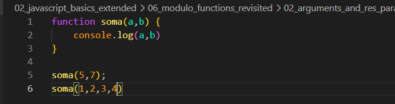
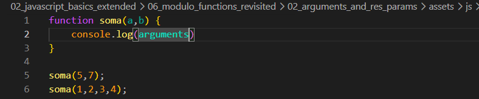
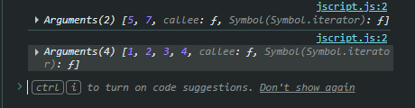
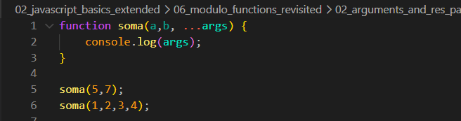
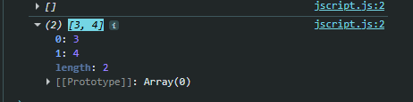
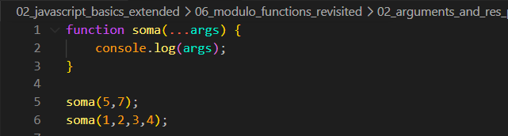

Arguments and Rest params
Intro
Para essa aula teremos o seguinte codigo como exemplo:

Temos um exmplo semelheante a aula anterior, porem nesse caso. Estamos passando mais argumentos doque temos de parametros.
Para essa aula teremos o seguinte codigo como exemplo:

Temos um exmplo semelheante a aula anterior, porem nesse caso. Estamos passando mais argumentos doque temos de parametros.
Nesse caso nao aparesentara erro em nosso console, porem, ira aparecer apenas os dois primeros valores passado e o resto sao ignorados.
Com ele conseguimos ver tudo que e passado para nossa funcao, ficando da seguinte forma:




Como resultado, podemos observar que o primeiro tem um array vazio isso pois sao atribuidos a a b e o segundo 'resto'. Quando queremos escrever uma funcao que aceita qualquer numero de parametros, podemos por exemplo ignorar a b removendo eles e atribuir nosso rest operator e dar algum nome para essa variavel ( no caso chamamos ela de args ). Ficando da seguinte forma em nosso codigo:

Aqui teremos como valores [5, 7] para nosso primeira chamada da funcao e valores [1,2,3,4] para a segunda chamada de nosa funca. O importante e notar que o resultado desse args e notar se tornam um array com esses novos argumentos